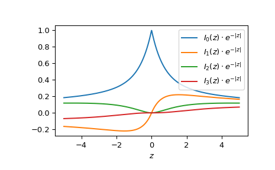

scipy.special.ive#
- scipy.special.ive(v, z, out=None) = <ufunc 'ive'>#
Exponentially scaled modified Bessel function of the first kind.
Defined as:
ive(v, z) = iv(v, z) * exp(-abs(z.real))
For imaginary numbers without a real part, returns the unscaled Bessel function of the first kind
iv.- Parameters:
- varray_like of float
Order.
- zarray_like of float or complex
Argument.
- outndarray, optional
Optional output array for the function values
- Returns:
- scalar or ndarray
Values of the exponentially scaled modified Bessel function.
See also
Notes
For positive v, the AMOS [1] zbesi routine is called. It uses a power series for small z, the asymptotic expansion for large abs(z), the Miller algorithm normalized by the Wronskian and a Neumann series for intermediate magnitudes, and the uniform asymptotic expansions for \(I_v(z)\) and \(J_v(z)\) for large orders. Backward recurrence is used to generate sequences or reduce orders when necessary.
The calculations above are done in the right half plane and continued into the left half plane by the formula,
\[I_v(z \exp(\pm\imath\pi)) = \exp(\pm\pi v) I_v(z)\](valid when the real part of z is positive). For negative v, the formula
\[I_{-v}(z) = I_v(z) + \frac{2}{\pi} \sin(\pi v) K_v(z)\]is used, where \(K_v(z)\) is the modified Bessel function of the second kind, evaluated using the AMOS routine zbesk.
iveis useful for large arguments z: for these,iveasily overflows, whileivedoes not due to the exponential scaling.References
[1]Donald E. Amos, “AMOS, A Portable Package for Bessel Functions of a Complex Argument and Nonnegative Order”, http://netlib.org/amos/
Examples
In the following example
ivreturns infinity whereasivestill returns a finite number.>>> from scipy.special import iv, ive >>> import numpy as np >>> import matplotlib.pyplot as plt >>> iv(3, 1000.), ive(3, 1000.) (inf, 0.01256056218254712)
Evaluate the function at one point for different orders by providing a list or NumPy array as argument for the v parameter:
>>> ive([0, 1, 1.5], 1.) array([0.46575961, 0.20791042, 0.10798193])
Evaluate the function at several points for order 0 by providing an array for z.
>>> points = np.array([-2., 0., 3.]) >>> ive(0, points) array([0.30850832, 1. , 0.24300035])
Evaluate the function at several points for different orders by providing arrays for both v for z. Both arrays have to be broadcastable to the correct shape. To calculate the orders 0, 1 and 2 for a 1D array of points:
>>> ive([[0], [1], [2]], points) array([[ 0.30850832, 1. , 0.24300035], [-0.21526929, 0. , 0.19682671], [ 0.09323903, 0. , 0.11178255]])
Plot the functions of order 0 to 3 from -5 to 5.
>>> fig, ax = plt.subplots() >>> x = np.linspace(-5., 5., 1000) >>> for i in range(4): ... ax.plot(x, ive(i, x), label=fr'$I_{i!r}(z)\cdot e^{{-|z|}}$') >>> ax.legend() >>> ax.set_xlabel(r"$z$") >>> plt.show()
